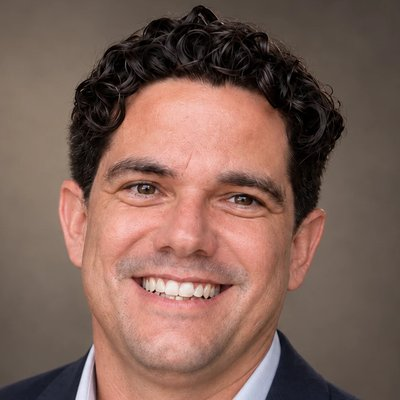

Engineer, circular economy consultant and founder
Twelve years turning recovered plastic into plastic lumber across the Caribbean and Central America. Today I bring that field experience together with software engineering and operations consulting, through Jasmine Global Partners and Atlas.
What I do
Circular economy
CNA A-TRES
Plastic lumber production, technical training and South-South technology transfer to communities in Belize and Honduras.
Consulting
Jasmine Global Partners
Operational efficiency, sustainable manufacturing and technology transfer for mid-sized companies in Central America and the United States.
Technology
Atlas
Engineer in Informatics Sciences. I design and build software products with Domain-Driven Design; Atlas is my current platform in development.
Areas of expertise
Plastic and aluminum processing
Sorting, shredding, extrusion and molding of plastic lumber; aluminum production including casting.
Technical training
Training design and delivery for technicians and communities, from classroom to hands-on plant workshops.
Safety in recycling plants
Operating protocols, personal protective equipment and lockout/tagout (LOTO).
South-South technology transfer
Feasibility assessments, community capacity building and coordination with NGOs, local governments and donors.
Operations consulting
Process design, cost reduction and digitization with ERP systems; service and revenue models for consulting.
Software architecture and product
Domain-Driven Design, architecture decision records, TypeScript, NestJS, Next.js and PostgreSQL; AI-assisted development.
Experience
CNA A-TRES
- Leads a plant that turns recovered plastics into plastic lumber for street furniture, boardwalks, fencing and light construction.
- Also served as Production Director (2014–2016) and General Director (since 2016); took part in the aluminum production line.
- Cut production costs and rework by 15% each by digitizing the process with an ERP system.
South-South cooperation project — GEF Small Grants Programme (UNDP)
- Technical training for the Belize and Honduras delegations in Cuba, and community workshops in Guadalupe Carney (Honduras).
- Technical support for the new plants: the Belize plant was handed over in June 2025; the Honduras plant is under construction.
- Budget of USD 350,000: USD 150,000 from the GEF SGP and USD 200,000 in co-financing.
Jasmine Global Partners Corp.
- Founded and structured the company as a Florida corporation in June 2026, set up for cross-border work.
- Designed the service and revenue model: project fees, advisory retainers and consulting contracts.
- Services: operational efficiency, sustainable manufacturing and technology transfer for mid-sized companies in Central America and the United States.
University of Informatics Sciences (UCI)
- Taught programming and web development.
- Led software projects for educational platforms; co-authored a guide on information architecture for educational multimedia.
Projects
Atlas — behavioral performance platform for traders
A platform that helps traders stick to their trading plan — process over outcome: session and trade logging, automated rule evaluation and a coach–trader view.
- Product vision and domain model: trading plans, rules, sessions, evidence and capital alerts.
- Architecture governed by decision records (ADR) and a custom Python linter that checks the consistency of the canon.
- Working prototype: NestJS API, Next.js front end in Spanish and English, PostgreSQL, and read-only import of executions from Interactive Brokers.
- Built with AI coding agents under a reviewed pull-request workflow, for a pilot with a trading academy.
Education and publication
Engineer in Informatics Sciences
University of Informatics Sciences (UCI), Havana · 2004 – 2009. Software engineering, programming and information systems.
Applied AI for business
Self-directed intensive program, 2026: decision-support systems, data analysis and process automation.
Publication (2012)
Guía práctica de Arquitectura de Información para aplicaciones multimedia educativas. No Solo Usabilidad no. 11, co-author; cited by universities in Spain and Latin America.
Press
- 2025GEF Small Grants Programme – Belize — handover of the Belize plastic upcycling plant
- 2023Xinhua — interview on plastic lumber and import substitution
- 2021Associated Press — Cuban entrepreneurs join the green industry
- 2019Reuters — Cuban cooperative turns plastic into plastic lumber
- 2019Cubahora — interview on A-TRES
Contact
Open to consulting on circular economy, recycling plants and technical training, operations improvement, and software products. Spanish (native) · English (B2).